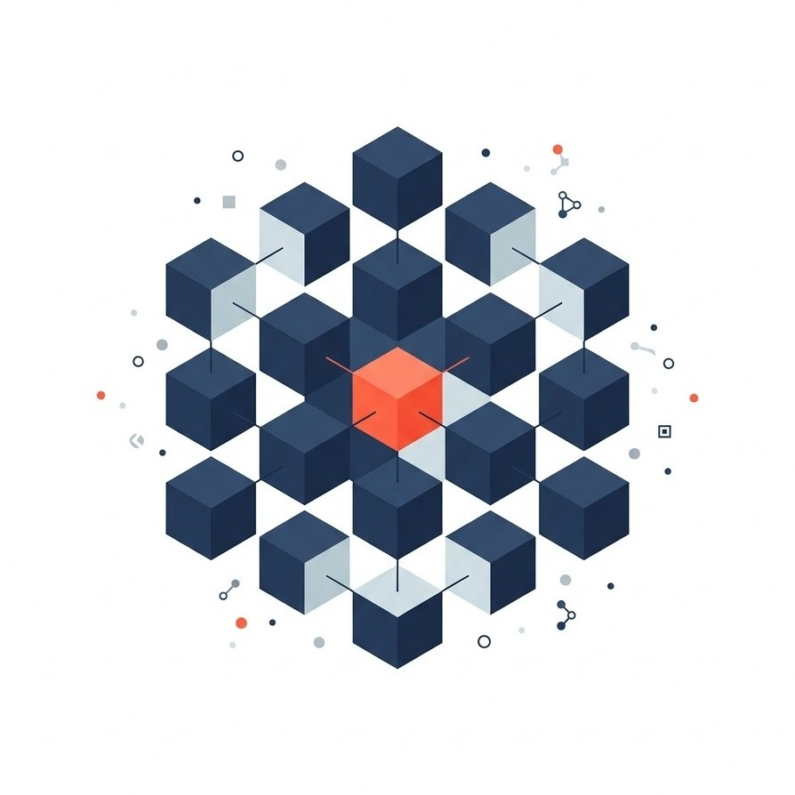
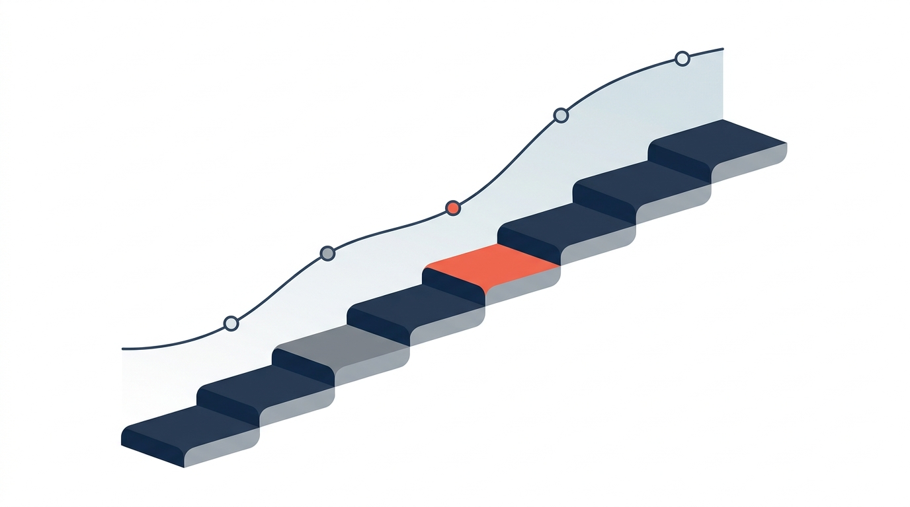

Votre partenaire pour transformer vos processus d'affaires en résultats mesurables. Your partner to turn business processes into measurable results.
Newco Studio réunit une plateforme d'automatisation par l'IA et des experts en transformation. Nous repérons où l'IA crée vraiment de la valeur chez vous, nous la réalisons, puis nous l'industrialisons et la faisons évoluer dans le temps. Newco Studio brings together an AI automation platform and transformation experts. We pinpoint where AI truly creates value for you, we build it, then we industrialize it and keep it evolving over time.

Le problème n'est pas l'IA. C'est de savoir où l'appliquer — et comment garder le contrôle. The problem isn't AI. It's knowing where to apply it — and how to stay in control.
Presque toutes les entreprises expérimentent l'IA aujourd'hui. Très peu en tirent des résultats mesurables. L'écart n'est pas technologique : il est organisationnel et méthodologique. Almost every company is experimenting with AI today. Very few get measurable results. The gap isn't technological — it's organizational and methodological.
Nous sommes bâtis pour l'autre côté de ces statistiques.We're built for the other side of these statistics.
Un cycle simple, pensé pour créer de la valeur durable.A simple cycle, built to create lasting value.
Nous ne livrons pas un projet isolé : nous installons un cycle qui rend chaque itération plus rapide, moins coûteuse et plus rentable que la précédente.We don't just deliver a one-off project: we set up a cycle that makes each iteration faster, cheaper and more profitable than the last.
ÉvaluerEvaluate
Nous mesurons votre maturité IA et repérons les opportunités à plus fort impact, chiffrées et priorisées.We measure your AI maturity and identify the highest-impact opportunities, quantified and prioritized.
RéaliserDeliver
Nos experts et notre plateforme construisent la solution, avec la validation humaine intégrée aux points clés.Our experts and platform build the solution, with human validation built into every key step.
IndustrialiserIndustrialize
Nous transformons la solution en processus fiable, réutilisable et gouverné, prêt pour le passage à l'échelle.We turn the solution into a reliable, reusable, governed process ready to scale.
Faire évoluerEvolve
Nous mesurons les résultats, ajustons et ouvrons le prochain cycle de valeur avec vous.We measure results, adjust, and open the next value cycle with you.
Ce que la plateforme Newco permet de résoudre.What the Newco platform helps you solve.
Des cas d'utilisation configurés à partir d'un même moteur méthodologique — la plateforme Newco — et adaptés à votre secteur et à votre réalité. En voici trois ; découvrez-les tous sur la page dédiée.Use cases configured from one methodological engine — the Newco platform — and tailored to your sector and reality. Here are three; explore them all on the dedicated page.

Traçabilité et preuves à chaque étapeTraceability and evidence at every step
Structurer les exigences, intégrer les contrôles et démontrer la conformité.Structure requirements, embed controls and prove compliance.

De la demande à l'offre approuvéeFrom request to approved proposal
De la demande client à la proposition approuvée, structurée et personnalisée.From client request to an approved, structured and tailored proposal.

Des méthodes vivantes, activées au bon momentLiving methods, activated at the right moment
Capturer les façons de faire et les rendre interactives, selon le rôle et le contexte.Capture ways of working and make them interactive, by role and context.
Une plateforme et des experts, réunis sous un même toit.A platform and experts, under one roof.
La plateforme NewcoThe Newco platform
Vous décrivez un processus d'affaires ; notre plateforme l'exécute. Des agents IA spécialisés font le travail répétitif, et vos équipes gardent la main à chaque point de décision. Un moteur commun, des solutions uniques.You describe a business process; our platform runs it. Specialized AI agents handle the repetitive work, and your teams keep control at every decision point. One common engine, unique solutions.

Le Studio IA+The AI+ Studio
Nos experts évaluent votre organisation, priorisent les opportunités selon la valeur et les bénéfices, puis livrent et mesurent les résultats. Diagnostic et réalisation, sans intermédiaire.Our experts assess your organization, prioritize opportunities by value and benefits, then deliver and measure results. Diagnosis and delivery, with no hand-offs.

Conçu pour passer de l'analyse à la réalisation.Built to go from analysis to real results.
Les affaires avant la technologieBusiness before technology
Nous partons de vos enjeux et de la valeur visée, jamais de la mode technologique.We start from your challenges and target value, never from tech hype.
La preuve avant la promesseProof before promise
La valeur est démontrée étape par étape, avant tout investissement majeur.Value is proven step by step, before any major investment.
Diagnostic et réalisation réunisDiagnosis and delivery together
Nous diagnostiquons, concevons, développons et faisons évoluer — sans intermédiaire.We diagnose, design, build and evolve — no hand-offs.
Une plateforme qui accélèreA platform that accelerates
Nos blocs réutilisables réduisent les délais, les coûts et les risques de chaque projet.Our reusable building blocks cut the time, cost and risk of every project.
Connectée à vos systèmesConnected to your systems
Nos solutions se branchent à vos outils existants — SharePoint, bases de données, API — sans tout remplacer.Our solutions connect to your existing tools — SharePoint, databases, APIs — without replacing everything.
Conformité validée par l'IAAI-validated compliance
L'IA vérifie chaque livrable au regard de vos normes, réglementations et politiques internes.AI checks every deliverable against your standards, regulations and internal policies.
Newco Studio mobilise un écosystème de spécialistes et de partenaires selon les besoins de chaque projet.Newco Studio taps a network of specialists and partners as each project requires.
Quelle opportunité d'IA devrait être priorisée chez vous ?Which AI opportunity should you prioritize first?
Une première discussion suffit pour clarifier votre contexte et identifier la prochaine étape concrète.A first conversation is enough to clarify your context and identify the next concrete step.